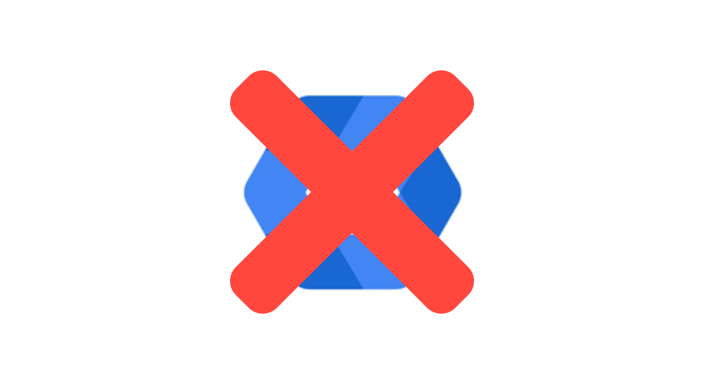

À compter du 22 avril 2023 à 14h il ne sera plus possible de se connecter ou d'utiliser Google Fake Admin Panel. Merci d'avoir utilisé ces services.
Le service était dépassé et plus mis à jour, il sera remplacé par Admin Services. Depuis sa création, il n'était pas possible de créer des comptes et le service utilisait un compte universel. Ce service utilisait également des ressources faites par Google dont personne n'avait en réalité les droits.
Nous savons que le changement est difficile, mais il faut savoir qu'il s'agit de projets indépendants fait par des étudiants, il est donc préférable de faire également toutes les ressources à la main, et donc qu'il n'est pas forcément autorisé d'utiliser ses ressources.
Sachant que le projet n'utilisait pas de serveurs, aucunes données vous concernant n'a été stocké sur le site. Donc aucunes données de vos données ne devront être récupérées. Cependant, si vous voulez continuer à faire vivre le projet, n'hésitez pas à accéder au projet GitHub du projet et de le télécharger avant la fin de support.
Le support sera arrêté le 22 avril 2023 à 14h, vous ne pourrez donc plus vous connecter et accéder aux autres pages du site. Cependant vous pouvez contacter Enio Aiello, le développeur du site pour en savoir plus.